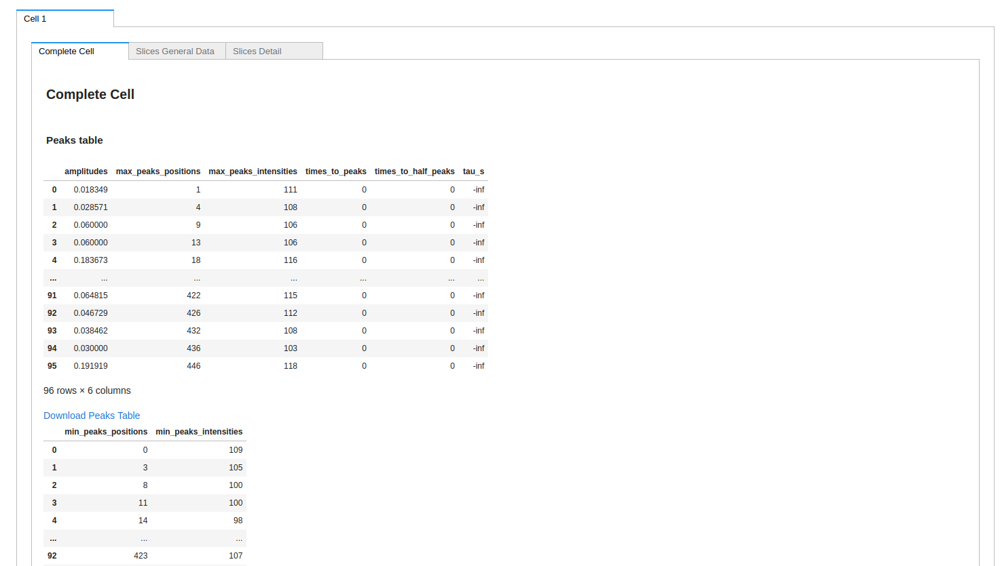
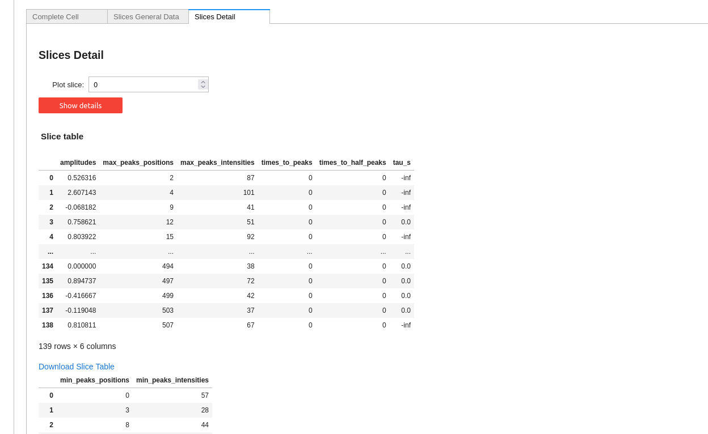

Citing CardiAP
CardIAP: Calcium images analyzer web application
Ana Julia Velez Rueda, Agustín García Smith, Luis Alberto Gonano, Gustavo Parisi and Leandro Matías Sommese.
Copyright (c) 2020-2021 Velez Rueda, Garcia Smith, Sommese
Here we present CardIAP, an open-source web application for analyzing series of calcium handling phenomena from confocal microscopy images.
CardIAP is a Python based tool, which allows users to easily work with a single file or a pool of images, and obtain representative amplitude and kinetics data.
CardIAP: Calcium images analyzer web application
Ana Julia Velez Rueda, Agustín García Smith, Luis Alberto Gonano, Gustavo Parisi and Leandro Matías Sommese.
You can easly use CardiAP locally by installing it like follows:
$ voila CardiAP.ipynb
$ voila CardiAP.ipynb --autoreload=True
$ virtualenv venv
$ . venv/bin/activate
$ pip3 install -r requirements.txt
This project is hosted in Binder and Heroku. Launch CardiAP here:
STEP I: Upload your image or images for analyzing by using the upload button
STEP II: select the region of the picture for the analysis.
CardiAP allows the user to crop each image interactivelly, by using the image display and width and heigth selector.
STEP III: Voilà!! Now you can check out your results and download the tables
S  CardiAP also provides the amplitudes and intensities plots.